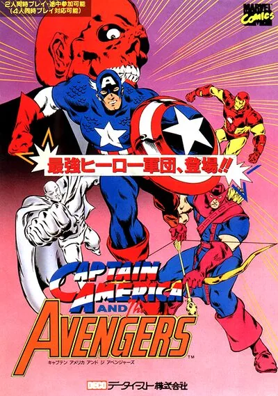

FBA (FinalBurn Alpha)
Captain America and The Avengers
- Año: 1991
- Desarrollador: Data East
- Género: Beat 'em up
- Jugadores: 4 jugadores
- A dos: a la vez · Coin vale para los dos
Beat 'em up de Data East con tramos de disparos: el Capitán América, Iron Man, la Visión y Ojo de Halcón, cada uno con su arma o poder, luchan contra Cráneo Rojo y sus supervillanos. Cinco fases y el jefe final.
Controles
Probado en la bartop (2026-11-17): arranca con FinalBurn Neo y los botones van como en la tabla. Sonido sin comprobar (no hay altavoces). Probado en la bartop (2026-11-21): bien, los botones y a dos a la vez. Dos botones (FinalBurn Neo: B = botón 1, A = botón 2). Dos jugadores a la vez. Monedas comunes: Coin mete los créditos de los dos jugadores y 2P solo empieza el J2 (ajuste del 2026-11-19; probado por el usuario el mismo día).
| Panel | Juego |
|---|---|
 | Atacar · encima de un objeto (una piedra…): recogerlo; otra vez B: lanzarlo |
 | Saltar |
| + | Saltar y, en el aire, B: ataque hacia el suelo |
| + | Ataque especial (el Capitán América lanza el escudo; Ojo de Halcón, una flecha) |
| + | Mantener los dos: defenderse (escudo de fuego de Iron Man, escudo del Capitán América, arco de Ojo de Halcón; la Visión se vuelve casi invisible) |
| + + | Saltar y, en el aire, B + A: disparar desde el aire |
 | Empezar (jugador 1) |
 | Empezar (jugador 2) |
 | Meter una moneda (vale para los dos jugadores) |
+  | Salir del juego |
El panel en FBA (FinalBurn Alpha)

Argumento
Red Skull (Cráneo Rojo) ha reunido un ejército de supervillanos y secuaces para conquistar el mundo, y quiere construir un gigantesco cañón láser del Juicio Final. Cuatro Vengadores salen a pararle: el Capitán América, Iron Man, Ojo de Halcón y la Visión. Por el camino les ayudan otros, como la Avispa, Mercurio, Wonder Man y Namor.
Se enfrentan a Klaw, Living Laser, Torbellino, un Centinela, el Mago, Grim Reaper, el Mandarín, Juggernaut, Ultrón, el Controlador y el asesino Crossbones.
Final: los Vengadores llegan hasta Red Skull y lo derrotan en la batalla final.
Fuentes
Jugabilidad
- Tipo de juego: beat 'em up de Data East (1991), para hasta cuatro jugadores. Hubo dos muebles: uno de cuatro jugadores, cada puesto con su personaje fijo, y otro de dos jugadores que eligen entre los cuatro.
- Estructura: cinco fases y el jefe final (ver «Guía de niveles»).
- Ataque: pulsar atacar encadena puñetazos y patadas. Se pueden recoger y lanzar algunos objetos.
- Avenger Attack: el ataque a distancia de cada uno: el escudo del Capitán América, las flechas de Ojo de Halcón y los rayos de Iron Man y la Visión. En el aire, el Capitán y Ojo de Halcón dan una patada voladora, y Iron Man y la Visión disparan en diagonal.
- Carrera: dos toques rápidos al joystick; permite deslizarse y cargar con el hombro.
- Fases de vuelo: a ratos se vuela disparando, como en un matamarcianos; Iron Man y la Visión vuelan solos y los otros dos usan una máquina voladora.
Botones según las guías
| Recreativa | Panel | Acción |
|---|---|---|
| Atacar + saltar | + | Movimiento especial del personaje (comprobado en la bartop: ver la tabla de controles) |
| Joystick dos veces hacia un lado |  | Correr (deslizarse, cargar con el hombro); según las guías, no comprobado en la bartop |
Fuentes
Guía de niveles
Lo marcado con ⚠️ no está probado en la bartop.
- Cinco fases y el jefe final, con tramos de pelea a pie y tramos de vuelo.
- Jefes: los supervillanos de «Argumento». ⚠️ Las fuentes no dicen en qué fase sale cada uno; el vídeo de «Vídeos» los muestra en orden.
- Jefe final: Red Skull.
Fuentes
Objetos
| Objeto | Qué hace |
|---|---|
| Objetos del escenario | Recogerlos y lanzarlos a los enemigos. |
Fuentes
Trucos y secretos
- Ayudantes: la Avispa, Mercurio, Wonder Man y Namor aparecen en algunos momentos para echar una mano.
- Saga: Data East hizo después Avengers in Galactic Storm (1995), un juego de lucha. En 2021 salió en un mueble de Arcade1Up y en 2026 en la recopilación Marvel MaXimum Collection.
Fuentes
Longplay

Partida completa de la recreativa (33 min), de AL82 Retrogaming Longplays: [Captain America and the Avengers Longplay (Arcade) [4K]](https://www.youtube.com/watch?v=nnE-RKP-K7o).
Pulsa el minuto de un nivel para ver el vídeo desde ese punto.